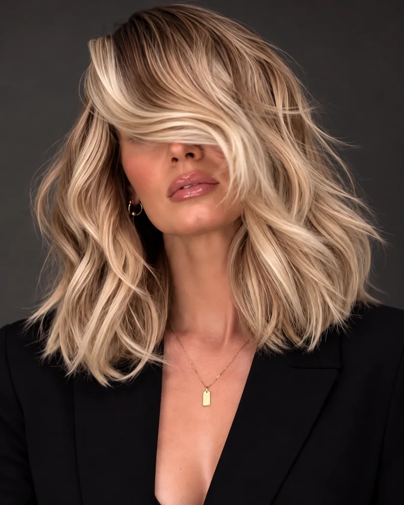
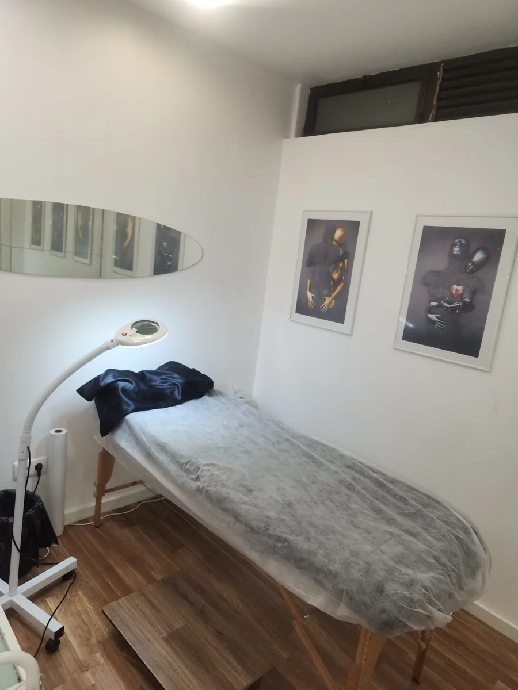
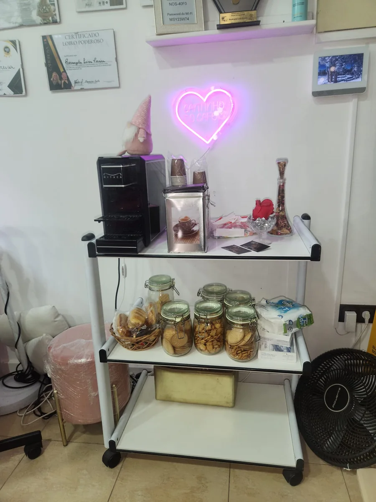
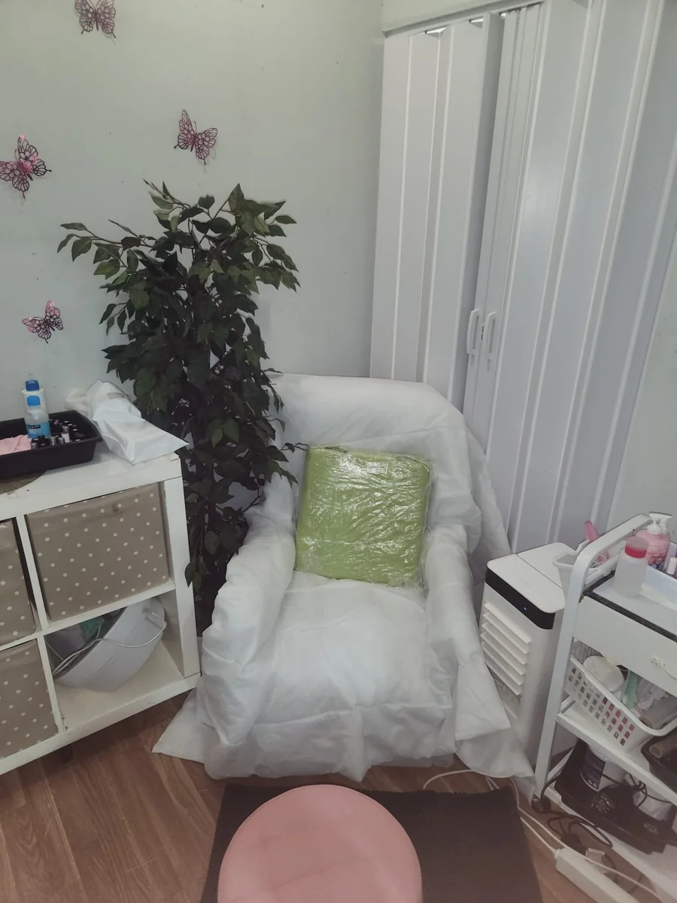

Alisamento orgânico a laser
Para quem procura alinhamento e uma rotina mais prática. A indicação do protocolo começa pela avaliação do cabelo e do seu histórico de tratamentos.
Quero saber se é para mimBELEZA COM IDENTIDADE · CARNAXIDE
Mais do que um novo visual, um momento só seu. Cuidado capilar, atenção aos detalhes e o acolhimento que merece.

O SEU TEMPO. A SUA BELEZA.
Quer simplificar a rotina, cuidar dos fios ou encontrar um visual que tenha a sua identidade? Aqui, começamos por perceber o que procura — sem pressa, com escuta e atenção.
CUIDADO, TÉCNICA E INTENÇÃO
O melhor cuidado é aquele que respeita a sua história, a sua rotina e as características dos seus fios.

UM CUIDADO À SUA MEDIDACONHEÇA A ANGELA
Por trás do Cabelos & Arte está Rosângela Luiza Pereira, conhecida como Angela Roh. Uma profissional apaixonada pelo que faz, que acredita que cada cliente merece ser ouvida e cuidada de forma única.
A formação em cuidados capilares e o reconhecimento com o prémio Lisos de Ouro fazem parte da sua trajetória. Mas é no atendimento de todos os dias que essa dedicação ganha vida.
“Mais do que cuidar de cabelos,Conhecer as formações
eu cuido de pessoas.”ANGELA ROH
PRÉMIOS E CERTIFICADOS
Formação e reconhecimento fazem parte do percurso da Angela. Conheça os certificados e amplie cada fotografia para ver os detalhes.
CABELOS & ARTE · CARNAXIDE
Um ambiente familiar, uma Bossa Nova suave e um café. Aqui, o seu cuidado também é uma pausa na correria do dia.

Deixe as preocupações
lá fora.
O momento é seu.

BELEZA QUE TEM MOVIMENTO
Explore as imagens e os vídeos partilhados pelo salão. Traga a sua inspiração: vamos conversar sobre o que faz sentido para o seu cabelo.
Acompanhar no InstagramA CONFIANÇA CONSTRÓI-SE NO DIA A DIA
SEM COMPLICAÇÕES
Envie uma mensagem com a sua ideia, dúvida ou objetivo para o cabelo.
A Angela orienta a avaliação e esclarece o procedimento, o valor e a disponibilidade.
Combine a marcação diretamente com a Angela e venha conhecer o nosso espaço.
ANTES DE NOS VISITAR
Há alguma coisa que gostava de saber?
Estamos a uma mensagem de distância.
A indicação depende do estado dos fios, do histórico de coloração e de outros tratamentos. A avaliação com a Angela é o primeiro passo para perceber qual é o cuidado adequado para si.
Conte à Angela quais os procedimentos que fez e quando os realizou. A compatibilidade e a ordem dos tratamentos devem ser avaliadas individualmente antes da marcação.
O valor e o tempo dependem do serviço e das características do cabelo. Envie uma mensagem pelo WhatsApp para receber orientação e combinar os detalhes antes da sua visita.
Entre em contacto para consultar os dias e horários disponíveis. A sua marcação fica confirmada após combinar diretamente com a Angela.
Estamos na Rua Antero de Quental, 1B, 2790-020 Carnaxide, no concelho de Oeiras, Portugal. Pode abrir as direções na secção abaixo.
ESPERAMOS POR SI EM CARNAXIDE
O cuidado que procura pode começar com uma simples conversa. A Angela ajuda a encontrar o próximo passo.
Marcar pelo WhatsApp